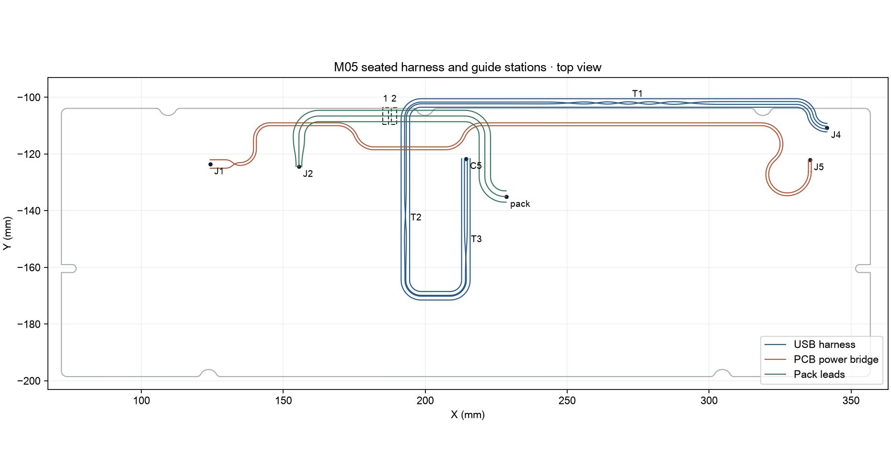

English | Chinese
E73 cable retainers: parts, printing and dry fitting
Use the M05 print checklist and wire lengths for the CORNER-07 first article. M05 reuses the fourteen USB and power guides from M04 and moves both battery guides and their folded films.
This set follows E73 CORNER-07, its rotated mainboard J5 and the nine-conductor route to the existing C5 daughterboard. Use the current wire connections and conductor lengths.
Engineering parts for review and measured dry fitting. Rigid-body, film, wire-capture and tolerance checks do not qualify resin strength, tape adhesion, human access or the complete installation/withdrawal sequence. Complete closed-case assembly release remains open. Do not permanently bond the review set before the process and service gates are resolved.

What to make
Rigid parts: three USB-R roof guides; two USB-F floor bases and their two removable lids; two BAT-R floor guides; five PWR-R PCB guides; PWR-F-upper and PWR-F-lower. Seven rigid guides attach to the case, six to the PCB, and three are removable covers/halves.
Film pieces: three USB rear straps, four USB front side patches, two battery straps, five power rear straps, two power fan-out side patches and one lower power fan-out strap. Folded straps have two bonding legs; side patches bridge both mating pieces. A floating rectangle below a wire is not a complete retainer.
Manufacturing requirements
- Millimetres, 100% scale. Local STL files are translated to the origin and, where needed, rigidly turned so the channel is accessible for printing. Their shape and volume are checked against the assembly STEP. No scale or shrink compensation is baked into them.
- Extract the M05 ZIP to get 16 individual STL files. JLC3DP asks for one model per uploaded file. Its ordinary SLA size floor is 5 × 5 × 5 mm or 10 × 2 × 2 mm. All 16 guides fall below both options. Its general size tolerance for parts of this length is ±0.20 mm. The required 0.05 mm surface-point limit and 0.30 mm finished web remain specific to these guide geometries. The parts need a supplier-confirmed process and measured trial parts before final assembly. JLC3DP model limits · JLC3DP upload instructions · M05 process screen
- Use an insulating tough engineering resin or an insulating machined polymer that can meet the finished dimensions. The files do not establish that every low-cost SLA service can meet them. Agree on the small-part process, support removal and post-cure before fabrication.
- Maximum finished surface-point error: 0.05 mm in 3D. Minimum measured remaining web: 0.30 mm after support removal and bonding-face finishing. Inspect the rear stepped roofs, groove edges, front lid roofs and battery guide walls. Do not enlarge wire channels or sand a thin web below the limit.
- Single-wire groove radius: 0.50 mm; central USB pair channel radius: 1.01 mm. The shrink allowance in the checker accounts for the stated part-profile error; it is not an instruction to change these CAD dimensions.
- Fit bonding lands to the actual post-cured case and inspect the nominal 0.10 mm bondline and remaining webs. Two independently printed, unfinished surfaces are not assumed to fit that gap automatically. Do not force a guide against a wall or compress the battery to make it fit.
- Print orientation is not installation orientation. Restore the part to its assembly STEP pose using the indexed drawing/datums. Do not mirror parts or transfer the slicer's arrangement coordinates into the keyboard.
USB front clearance study
Applying a hypothetical 0.20 mm surface-point error to the current guide design calls for a 0.625 mm single-wire groove radius and a 0.70 mm nominal web to retain the specified 0.30 mm finished web. Enlarging the pair groove and thickening the USB front guides at their current axis consumes the floor and PCB clearances. The 0.20 mm value is an engineering trial budget for these surfaces. The public SLA size tolerance does not establish that budget on these features. JLC3DP dimensional guidance
The CAD trial lowered the USB front wire axis by 0.60 mm and recessed each guide seat by 1.05 mm. This leaves 0.174 mm clearance to the bare PCB after allowances at 1.76 mm board thickness. The original 0.62 mm deep floor relief gave 0.158 mm clearance to the seated wires. Halfway through J4 withdrawal the ground wire had only 0.073 mm clearance, and at full axial withdrawal the D− wire fell 0.215 mm below zero on the same tolerance-adjusted measure. CAD report
Extending the relief 2.00 mm toward the front clears the nine wire envelopes in all seven modeled poses at 1.44, 1.6062 and 1.76 mm board thickness. The minimum residual gap across wires, fitted parts, fasteners, the pack envelope and the shell is 0.158 mm. The modified area leaves 3.56 mm or more to the checked exterior surfaces after allowances, with both service covers and all eight existing insert keepouts clear of the cut. CAD report
With the upper shell and both access covers removed and J2/J4 parked, the modeled deck and power bridge clear a 25 mm continuous vertical lift at all three board thicknesses. The deck includes the steel plate, PCB, fitted components, fasteners and board-mounted guides. The tightest rigid clearance after allowances is 0.174 mm, between the thickest PCB and the enlarged front guide envelope. Both parked housings clear the deck by 0.550 mm. The moving bridge wires retain a certified clearance of at least 0.150 mm. This trial uses the proposed guide envelopes. Printed groove dimensions, bonding, cable movement during withdrawal and physical service still need verification. Use the supplied M05 shell for the current build. CAD report
SLA coupons for the enlarged USB front guides
The two STL samples reproduce the enlarged grooves and the corrected seats without a new full shell. The 12.25 × 22.00 × 2.16 mm carrier contains two bases and two lids in one connected mesh. Its four branches are 2.00 × 2.00 mm. The 31.00 × 49.00 × 10.50 mm floor coupon retains both seats, the surrounding walls and the local cable relief. Both meshes pass the published minimum-size screen. JLC3DP's connected-parts process limits a file to ten pieces with connections thicker than 1.50 mm. Factory review and local feature accuracy remain open. JLC3DP connected-parts guide · JLC3DP SLA dimensions and tolerances
| File |
Quantity and purpose |
| Guide carrier STL |
Print one carrier at 100% scale in the intended case resin. |
| Floor coupon STL |
Print one floor sample separately in the same resin at 100% scale. |
| Cut and finish map |
Match the four positions before separating the branches. Green marks the raw blanks. Brown marks the carrier. Lines mark the finished side faces. |
| Finished fit reference STEP |
Inspect the four trimmed parts and the floor together in case coordinates. Upload the two STL files for quoting. |
- Mark the four locations before separation. Saw the branches off with stock left at the guide ends. Finish the two side faces and the face opposite each open groove. The CAD stock is 0.30 mm per face. Use the finished dimensions as the measurement targets. A base is 5.65 × 2.00 × 1.86 mm and a lid is 5.65 × 2.00 × 1.81 mm. Keep the groove mouths and film bonding faces free of support scars, chips and paint.
- Measure the remaining webs. The raw CAD wall is 1.00 mm, the finished CAD wall is 0.70 mm and the project requires at least 0.30 mm measured after finishing. Check the finished surfaces and groove profile against the 0.20 mm trial surface bound. The widened recesses retain 0.238 mm lateral clearance after the modeled allowances. Match the base to the actual floor for the 0.10 mm nominal bondline.
- With disconnected leads, dry-fit a base, lid and the four USB conductors on each floor seat. Test with the specified 0.65 mm maximum wire OD and the twisted data pair. Use four 2.00 × 1.40 mm film pieces at the side seams, with total thickness ≤0.075 mm. Check free feed, seam retention, wire migration, pinching and abrasion before any permanent bonding. The grooves share an opening. CAD verifies the prescribed positions for all four wires at both stations, across seven poses and three board thicknesses. The sample must establish behavior under actual pull and flex. The supplied full M05 shell still pairs with its standard retainers. Coupon measurements
Connected blanks for the 12 retained guides
The relieved-bottom trial uses the front guide carrier above together with one case-guide carrier and one power-guide carrier, printed as separate SLA models at 100% in millimetres. The case carrier contains 3 rear USB guides and 2 battery guides. The power carrier contains 5 bridge guides and the 2 fan-out halves. Both are single connected meshes, with 2.00 × 2.00 mm branches joining sacrificial backing plates. Their dimensions are 8.00 × 41.90 × 4.55 mm and 8.00 × 47.40 × 4.01 mm. These pass the published model-size, connection and part-count screens. Factory review and local feature accuracy remain open. Case-guide blank STL · Power-guide blank STL · JLC3DP connected-parts guide
- Mark the parts in the order shown on the cut map before sawing the branches. Each branch joins the 2.40 mm backing below a finished part. There is 0.60 mm of machining stock on each transverse side. Use the trimmed low-Y edge as Y = 0 in the finishing table. Measure final dimensions from the guide faces and grooves. The printed frame supplies the rough layout. Cut map · Finishing table
- Remove the backing and transverse side stock. The three USB rear guides also need a 1.39 mm step over Y = 3.65–5.10 mm. The lower power fan-out half needs a 0.55 mm recess over Y = 0.70–4.30 mm with the two shoulders retained. The STEP references in the finishing table define the finished geometry. Verify the steps and the groove profiles after removing supports.
- Check finished surface-point error of ≤0.05 mm, remaining wall thickness of ≥0.30 mm, and an unpowered trial fit with the actual conductors and film. Match the bond faces to the cured case or PCB. The carrier and backing make the small parts printable as larger models. They preserve the finished groove geometry when trimmed in CAD. Standard SLA size tolerance cannot establish the required local accuracy, so the actual print and finishing process still require a sample. Trim reconstruction report · JLC3DP SLA dimensions and tolerances
Film material and cutting
Candidate: 3M 5413 polyimide film tape. Its manufacturer lists 0.069 mm typical total thickness. The project requires ≤0.075 mm including adhesive on the actual received lot; the typical value is not a guaranteed maximum or an adhesive qualification on the selected resin. 3M technical data
Use one small roll and cut the 17 indexed pieces; the net count is not 17 rolls. The SVG is in millimetres and includes a 50 mm scale bar. Print it without page fitting and verify that bar before using it as a paper reference. The CSV gives nominal blank dimensions. Folded blanks include 0.5 mm trim stock at each end; fold on the actual guide and trim to the assembly STEP envelope. They are not claimed exact neutral-axis bend developments. Do not leave extra film projecting into the PCB, case wall or another wire.
The CAD film geometry includes side legs and both front/fan-out seam patches. Keep contact lands clean and follow the adhesive supplier's instructions. The model's bonded area is a geometric contact check; peel strength, creep and wire retention still require a coupon/sample test. Treat removed film as replaceable consumable, not a repeatedly reusable fastener.
Dry-fit order and location checks
- Complete the bare-PCB soldering and bench tests. Keep guides/adhesive away from reflow heat, exposed lands, sensing surfaces and the J3 programming contacts.
- Inventory all 16 rigid parts and 17 film pieces. Use the local STL files for fabrication and the case-coordinate STEP files for placement. Measure the groove, roof and web dimensions before touching a PCB.
- With the case and electronics separate, dry-fit the three USB rear guides, two USB front bases and two battery guides to the M05 case. Match their mounting faces and the inspected bondline. Locate the battery guides at X 186 and 189 mm, both at Y −106.60 mm. Use temporary positioning for this review stage.
- Dry-fit five
PWR-R guides and PWR-F-upper on the PCB underside, avoiding components, vias/pads that must remain accessible and mounting hardware. The printed pose is often upside-down relative to this installed pose. Check against the actual board thickness and assembly reference.
- Seat the four USB conductors in their assigned outer/pair channels, the three pack conductors in their numbered battery channels, and the two bridge wires in their own power channels. Do not cross J5.1/J5.2; J1.2/J1.3 remain empty. Ensure each guide actually contains its intended wire rather than leaving the wire underneath or beside it.
- Trial the two USB front lids and lower power fan-out half. The USB side patches retain each base/lid pair; the power side patches retain its upper/lower pair. Check both mating pieces and the bottom strap before replacing any temporary positioning with adhesive.
- Check the entire harness against the case/PCB, fasteners, full protected-pack envelope and the stated route. The CAD limits include small residual gaps, so visual plausibility alone is insufficient. Any glue squeeze-out or untrimmed film is additional material that must fit inside the accepted envelope.
- Hold final bonding and closure until the complete installation/withdrawal and tool-access procedure is qualified. Opening the top case or turning SW100 off is not full battery isolation; unplug USB and isolate the pack before electrical rework. Use the current electrical guide for the actual power checks.
Evidence and limits
M04 retainer study covers the nominal board plus 1.44/1.76 mm thickness endpoints, complete films, guide/film/PCB/case/pack/component/fastener collisions and foreign wires. The M05 harness study records the moved battery guides and films.
Print-export study checks rigid transforms, millimetre mesh bounds and volume. These reports are source-bound design evidence, not physical solder, adhesive, resin, USB/BLE, EC, charging or battery thermal acceptance.